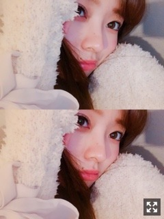
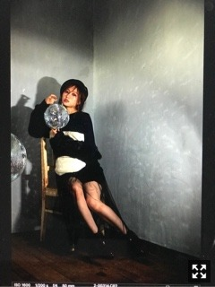
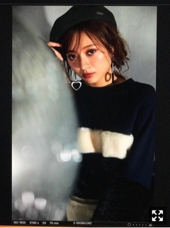
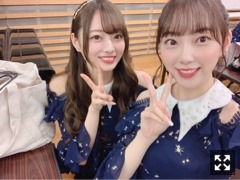

必然性、
みなさまこんにちは！！
乃木坂46の
梅澤美波です！

冬はパジャマを集めたくなります
もこもこが恋しくなりますね〜
でも、薄い生地の着て
分厚い毛布にくるまるのも悪くないです！
今日は井上さんのお誕生日！！
セラミュ以来仲良くさせて頂いていて
最近も一緒のお仕事が多くて、
ぴとってくっついてきてくれたり
ちょっかい出してきたりする井上さんが
可愛くてたまらないです( ¨̮ )♡
大好きです〜！！
書きたいことがたくさんあります！！
ごちゃごちゃになってしまったら
ごめんなさい(；；)
今月の１日には上海での
今後のグループの歴史にも残るであろう
その現場に私も参加出来たこと
とても嬉しく思います。
空港に着いた時から
ファンの方の温かさに驚きましたが
とても嬉しくなりました。
本当にありがとうございました(；；)！
日本で売っているタオルを
掲げてくださっている方も沢山いて、、
いつもは会いに来てもらう
立場かもしれないけど、
直接私たちから会いに行けたことが
本当に嬉しかったです！！
参加させて頂きます！！
とっても楽しみです！！
お越しくださる方、
一緒に楽しみましょう！∠( ˙-˙ )／
街を歩くとどこもかしこも
きらきらしていますね〜
私が好きな世界が広がっています
１２月なのに例年ほど寒くないな〜と
感じていましたが
ココ最近ぐっと冷え込みましたね
寒いのが好きな私からしたら
やっときた〜！冬だ〜！
という気持ちでございます
いくらでも外歩いていられます
寒さを感じない訳では無いんです、
ただその寒さが好きなんです( ¨̮ )
澄んだ空気が最高にすき！
でんと出かけた時
綺麗だったので撮りました
が、ブレブレです
何を撮ろうとしたんだろう、、
謎の画角です
夜は特に冷え込むので
寝る時は温かくして寝てくださいね
風邪ひかないようにね( ¨̮ )
bisさん発売中です！！
なんと6ページも！(；；)
本当に嬉しい限りでございます、、

bisさんの雰囲気が大好きで
その世界観に飛び込めることが
本当に幸せでなりませんでした、、

この衣装とメイクが
すごく好きでした( ¨̮ )
何パターンもメイクと衣装を替えて
撮って頂いたので、
ぜひ覗いて見てください！！
また呼んでいただけるように
頑張ります！！(；；)
告知◎
〜雑誌
▽１２／１ 「bis」
発売中です！
▽１２／４ 「日経エンタテインメント！」
連載です！
▽１２／２２ 「スピリッツ」
なんと、、表紙・巻頭グラビアをわたくし梅澤が務めさせて頂きます！(；；)
初登場で初表紙、、嬉しい限りです。
本当に有難いです。
ぜひ、チェックしてください！
▽１２／２２ 「アップトゥボーイ」
ソログラビアさせて頂いております！ぜひチェックお願いします( ¨̮ )
▽１２／２８ 「乃木坂46×週刊プレイボーイ」
毎年出させて頂いているプレイボーイさん！
今回は表紙にも参加させて頂きました、
ありがとうございます(；；)
色々な企画など盛り沢山です！
ぜひご覧下さい！
〜TV
▽１２／１６ NHK BSプレミアム 22:50〜「乃木坂46 show」
▽１２／２１ テレビ朝日系 19:00〜「MUSIC STATION SUPER LIVE 2018」
▽１２／２３ 日本テレビ系 23:00〜 「おしゃれイズム クリスマス1HSP」
〜ラジオ
▽１２／１４ CBCラジオ 22:00〜22:30「ナガオカスクランブル」
▽毎週月〜木 ニッポン放送 19:56〜20:00 「乃木坂46 梅澤美波の『のぎぼき』！」
先日放送されたFNS歌謡祭第2夜
ご覧くださった皆様
ありがとうございました！
クリスマスメドレー、
帰り道は遠回りしたくなる、
平成最後のスーパーアイドルソング「必然性」
に参加させて頂きました！
こんなに参加させて頂いて
本当に嬉しい気持ちと
有難い気持ちでいっぱいです。
そして「必然性」では
AKB48さん、欅坂46さん、
IZ*ONEさん、乃木坂46の
各グループ6名から構成される
スペシャルユニットに選んで頂いたこと、
本当に有難く思います。
私でいいのだろうか、、
と、何度も何度も思いました。
正直、不安な気持ちの方が大きかったけど
乃木坂46として観ている方の目に止まるようなパフォーマンスを！！と思い
自分なりに精一杯頑張りました。
本番はすごく緊張しましたが
なにより物凄く楽しめました！
曲も歌詞もすごく好きで
踊っていて本当に楽しかったです(；；)
今までと違った緊張感を感じた現場で
たくさん勉強になること、
刺激を受けることがあり
もっともっと頑張ろうと思いました！
本当にありがとうございました！

みおなさん！！
髪長いのもとても好き、
本当にかわいい(；；)
みおなさんのダンスが
本当に好きなんです、、！
一緒に振りの確認をしたりもしました( ¨̮ )
今日もお仕事一緒でした！
最近お話することが増えて
とっても嬉しいです(；；)
明日は個別握手会です！
久しぶりの握手会！！
お越しくださる方は楽しみましょう！
寒いので暖かい格好してきてね(；；)
それでは！
また更新します！
上手く伝わえられなくてもどかしいです、、
言葉の引き出しを増やしたいです
もっともっと頑張ります！
Original：https://www.nogizaka46.com/s/n46/diary/detail/48243?ima=4947&cd=MEMBER